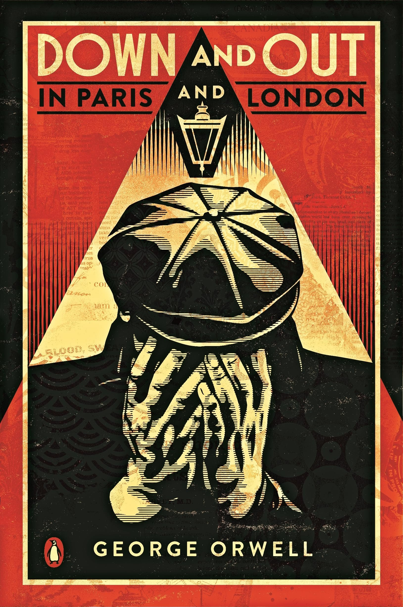

1984
Un roman dystopique décrivant une société totalitaire où la surveillance et la manipulation mentale sont omniprésentes.
Un roman dystopique décrivant une société totalitaire où la surveillance et la manipulation mentale sont omniprésentes.

Une allégorie politique qui critique le totalitarisme à travers une révolte d’animaux contre leurs maîtres humains.
Un récit autobiographique de la guerre civile espagnole et des expériences d’Orwell en tant que combattant.

Une chronique sociale décrivant la vie des pauvres à Paris et Londres, basée sur l’expérience personnelle d’Orwell.